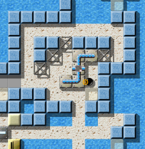

Level of the MonthEach month, we take a closer look at excellent Enigma levels. Excellent levels are those with the highest average user ratings and the greatest number of ratings altogether. Thus it is your vote that determines the Level of the Month. So please rate the levels you play and do not forget to submit your ratings together with your scores at the end of each month. You can find all previous Levels of the Month in our archive. February 2008: “Puzzle Puzzles” by Raoul BourquinOur Level of the Month February 2008 starts a little bit like “Sierpinsky”—curling its way through the first two screens. Our dear black marble might think that this is yet another dexterity challenge. But as it approaches the third, and then the fourth screen, the level unfolds like a Julia set, and ahead of us lies a landscape filled with puzzles, more convoluted than any fractal could be. Welcome to “Puzzle Puzzles”! 
Enigma VI # 55 - Puzzle Puzzles
“Puzzle Puzzles” enters our list of all-time-favorites at position six, shortly before its namesake “Labyrinth of Puzzles”. Our Level of the Year 2007, “Island Labyrinth” had a slight weakness this month, and saw its ratings sink by only 0.05 points—enough for “Quadropolis” to win back the leading position, which it now shares with “Island Labyrinth”. In the middle ranks, some levels experienced similar downturns. Only “Pneumatic Delivery” was able to win some more positive ratings and hit the 8-point-mark for the first time since July '07. “I had to become a civil engineer”You can see much about Raoul developing his mastery of level design: Starting with the relatively uninteresting “Life's Cross” as his first released level, working through various meditations and “Eternal circulation”, his levels became more and more complex and subtle. His early creations were onescreeners or near-to onescreeners, and this tradition (until now) culminates in the incredible “Industrial Puzzles”. I think “Space Station” was his first larger level, and with “Puzzle Puzzles” he now reached his first Level of the Month.
“Puzzle Puzzles” is one of the levels that I was not able to solve for
a long time—it's puzzles have a high level of difficulty. The level which is
made from seascape rather than a room surrounded by walls, is distinct in comparison with
other levels chosen as “Level of the Month”, and this enables us
to almost look at the seascape as a whole easily. So when I played the
level for the first time, it didn't seem to have lots of complex difficulties.
Additionally, I may have thought that I could solve it easily. But it was wrong,
and I felt slightly conceited. It was very difficult for me to solve it.
I began with solving the easy mode first. I had to become a civil engineer to
make a bridge across the sea to solve the level. But unexpectedly, it was
difficult for me to fulfill these tasks, because of the X-shaped wire netting
(st-grate1) and the slopes (fl-gradient) around the island with the puzzle
stones and broken bottles (it-booze-broken). And this wasn't all—the
level provides more obstacles, for example, it was difficult for me to operate an
invisible marble, as doing this requires dexterity, patience, and speed. So these
have high ratings on the level, as well as intelligence and knowledge. I like
such levels which require various high level abilities very much.
After solving easy mode, I was not able to solve difficult mode at once because
the structures are quite different. So I needed much time to become a more
excellent civil engineer. 'To become' is the most difficult, but is also the
most enjoyable. And the X-shaped wire netting (st-grate1) is a significant
barricade—if it hadn't been there, I would have solved it earlier.
Additionally, I was troubled as I knew how to solve the easy mode, but this
solution did not work in difficult mode.
I admire Raoul Bourquin very much, and I think that people who
create such splendid levels have abundant creative ability, and
without them, I could not spend happy times enjoying Enigma, and look forward
to new splendid levels in the future.
Yes, let's hope so! :-) “'Puzzle Puzzles' still fascinates me”

The first obstacle …
Indeed, “Puzzle Puzzles” is such a strange mix of difficult and
easy, that I just sit there, astonished, and ask myself, why I have
difficulties with such a simple and transparent level. Then, there are
days, when I don't understand anything at all, and ask myself, how this level
achieved “only” 84 points in the total difficulty rating.
However, “Puzzle Puzzles” still fascinates me, not that much as
“Houdini” does, but yet I tried more than a dozen times to get
wise to those puzzles in Raoul's “Puzzle Puzzles”.
I think, it's a result of the design. This mixture of fl-water and the bright
sand-like floor has something charismatic, and can definitely hold its own with the
designs of “Island Labyrinth” and “Temple of Gold”. The
level starts promisingly. This passage, as it snakes through the ocean in
serpentines, reminds me of the beginning of some fantasy-adventure-movie.
Whether “Puzzle Puzzles” will fulfill its promises? - I don't know.
But thousands of Enigma fans can't be wrong: Welcome LotM 2/2008. ;-)
“Puzzle Puzzles” is one of the 7 levels on Ronald's secret top-60
list, which I couldn't master yet. 3 of those are results of Ronald's level
lab, and I can't suppress the feeling, that, after “Temple of Gold”,
Ronald had a finger in the “Puzzle Puzzles” pie as well!?
However, compared to “Temple of Gold”, I think that “Puzzle
Puzzles” is the only level in Enigma where the easy version is more
difficult than the difficult one! Of course, I might be wrong, as I couldn't
solve the easy difficult nor the difficult easy version yet. *silent laughter*
Indeed, Harry was right. Here are Ronald's experiences with putting the icing on the cake of our Level of the Month:
On November 23rd, 2006, just a day after the beta release of Enigma 1.00 Raoul
sent me a first version of his “Puzzle Puzzles” asking for a quick
shortcut scan as he intended to add this level to the final 1.00 release that
was due within a fortnight.
It was quite obvious to me that the control of the mighty magic wand was a key
factor for this level. The user needs it, but it should not be usable at any
time and anywhere. It took us 17 revisions with proposals and detected shortcuts
from both sides until we had a lower right part of the level that fulfilled all
demands.
But the fix had two other side effects. First I came up with the idea of
adding “cherry island” in a manner that locally forces another more
complicated solution for the difficult mode than in easy mode. Yes, you may call
me a repeater as I did the same with “Temple of Gold”. Stick to
Ryujun's advice of solving the easy mode first!

… and the second!
Better get that extra life.
And secondly I learned that Enigma is missing a stone that lets the author
easily enforce that only marbles without a given critical item in their
inventory can pass. Meanwhile we detected a lot of other situations where this
stone is missing, e.g. combined effort levels would profit a lot from this
stone. So this level may have initiated a useful addition to our object zoo.
And another comment by a fellow LotM author:
When you play “Puzzle Puzzles” for the first time, you probably have no
idea what to do. But once you face the oxyd stones, you'll know what this
level is all about: A stone has to be transported across the whole map. And
while this already sounds difficult enough, an even larger challenge awaits the
gamer, once the stone is at its destined location. But these are exactly the
levels, I like to play. You see what to do and think about the various
solutions, and yet none of them seems to work somehow and you finally sit much
longer before this level than you originally planned.
“Puzzle Puzzles” distinguishes itself particularly through a good
design and fantastic puzzles (as its name suggests). In my
opinion, this level is one of the best in Enigma altogether, and because of
this it get a full 10 points from me. Let's hope we'll see more levels of this
kind in future!
Yes, the design of “Puzzle Puzzles” is as Raoul as possible: Most of his levels are in some way connected to water, but this time he combined it with bright white floors, with glass and light blue stones: Open and flooded with light, only broken by two darker platforms, reminding us of his other preferred combination of dark materials and abyss. “I intended the start to be particularly difficult”And another very typical element of Raoul's levels is highly prominent in “Puzzle Puzzles” puzzles. This started when Raoul rewrote an old Oxyd level, and searched for some way to randomize the puzzle stones. Although such a function already existed in ant.lua, we came into discussing the mathematics behind puzzle stones and under which circumstances it is possible to solve a freely randomized puzzle. This was in December 2005, when the first early version of “Oxyd-Puzzle” (V/19) came into life. Raoul extracted the randomizing functions and build the first version of libpuzzle, which was soon followed by libpuzzle 2. He revitalized the use of puzzle stones with this library, which is now included by 15 levels in the Enigma level packs. I was inspired by libpuzzle as well, and created “Procrustes” with it, using its option to reduce the number of permutations used to scramble the puzzle. (By the way: The mathematics behind the solvability of a given puzzle stone puzzle is highly interesting, as it's not just a question of odd and even permutations (as in the case of the famous 15 puzzle), but also of the similarity of puzzle stones with each other: A cross build from 5 puzzle stones is not solvable in general, but the ring of 8 stones is—although both make use of even permutations only.) Now let's listen to what Raoul himself can tell us about this level, which holds the record of second highest overall difficulty with 83 points out of 100 (“Aztec Temple” has 84):
I want to talk a little bit about the history of origins of the (from a
mathematical standpoint) second most difficult level in the world of Enigma.
First of all, a warning: This description contains lots of hints for the level
and its puzzles. When I see, what small number of players solved the level till
now, I think it's not a bad idea to include some additional hints here.
The first parts of this level were the “Z”- and the
“W”-puzzles. I was working on a late evening, trying to implement my
idea, which started as a composition of Sokoban and puzzle stones.
At the core of this idea were the kind of passages; small rooms, closed if possible,
in which a bulky puzzle piece didn't block the course of the marble, but
of another stone. The goal should be, to push some stone, for example a simple
wood stone, through such a passage, and place it on some well-defined
destination.

A cherry! What might it be good for?
I have to elaborate on that.
Thus I have started several attempts to build such passages to be as difficult
as possible. The result are the two large components, just under 8X8 tiles,
around which the whole level “Puzzle Puzzles” is centered.
Now we have some obstacle course for our stone. What was still missing, was a
start and a goal. The stone had to come from somewhere and to be brought
somewhere, to solve the level.
I intended the start to be particularly difficult, even to be the most
difficult element of the level. Hence, I utterly embedded the “VIS”
(very important stone). The gamer is supposed to exert himself to free it.
I soon had the idea for the goal: How to hide the oxyd stones in an
inaccessible cave. The entrance was blocked by a special lock.
Now I was looking for an idea to shape this lock in a more interesting way.
Because, in the first version of this level, the cave was accessible as soon as
one had the “key” in place.
I remembered a special property of the door material in use, and a pattern,
which I've once seen in an oxyd level, but not yet in Enigma. This was how the
laser entered the game, or the level. Here as well I aimed to not only place
the laser for the final puzzle, maybe even with the switch besides, but to
cleverly weave the ray into the level. After adding some holes to other puzzle
stones, another riddle was added and now the ray has to be laboriously guided
through the whole level …
As of now, the whole lower left part was still empty. But, as I considered the
puzzles to be complete, and didn't come up with another reasonable idea to
build some, I decided to create a simple, nearly meditative path, which wasn't
a portent to what might follow. For all explorers, this is the last moment of
tranquility, and the best place to limber up the mouse.
When the level was completed to this point, the strenuous part only began. I
presented the level to a small circle of brave adventurers. For some, this
level wasn't difficult enough, and the VIS to easy to reach. Until Ronald came
up with the idea of the cherry island—another ingenious riddle, which demands
some skills in recycling already used objects as well.
After obstructing many more small and large shortcuts, the level was still in
time for the oncoming Enigma release 1.0.
Of which we all are especially happy and grateful! Thank you very much, Raoul, for this brilliant level, we're all looking forward to your next masterpieces! Best greets, |